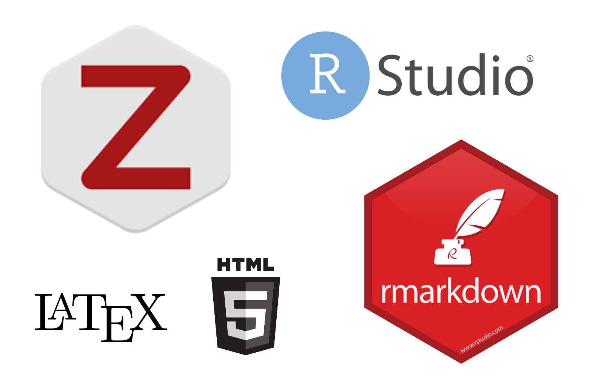
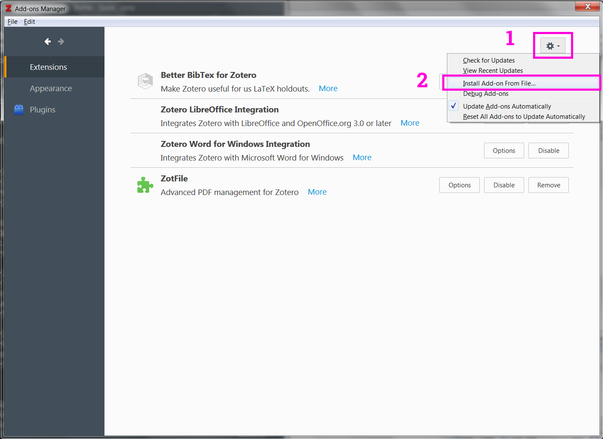
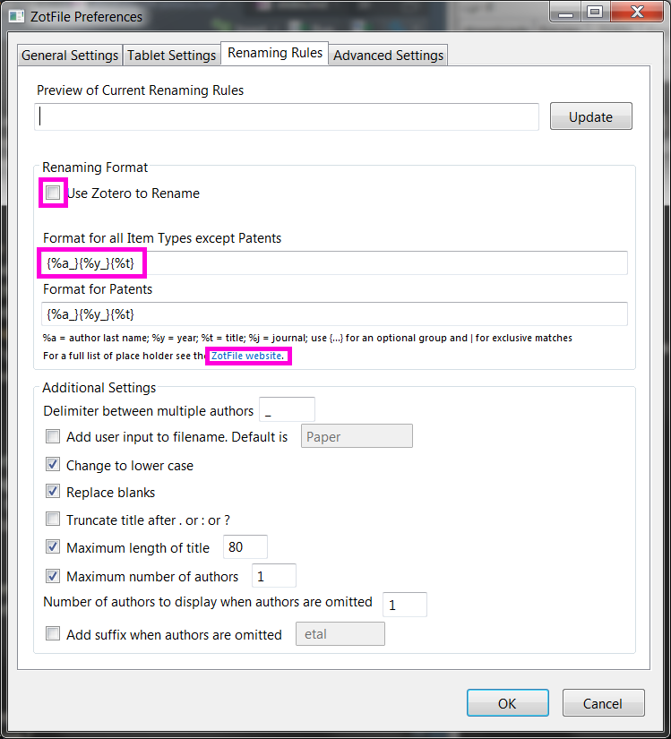
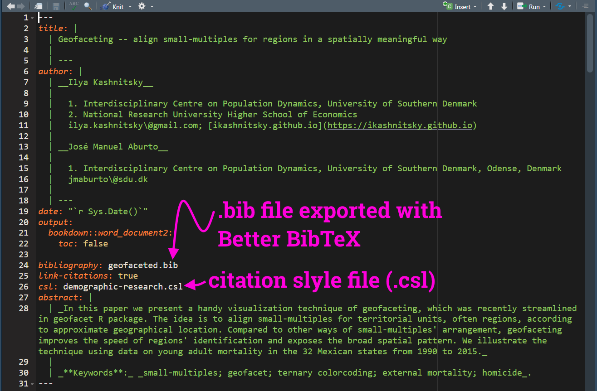

Zotero hacks: unlimited synced storage and its smooth use with rmarkdown
Ilya Kashnitsky ![]()
Here is a bit refreshed translation of my 2015 blog post, initially published on Russian blog platform habr.com. The post shows how to organize a personal academic library of unlimited size for free. This is a funny case of a self written manual which I came back to multiple times myself and many many more times referred my friends to it, even non-Russian speakers who had to use Google Translator and infer the rest from screenshots. Finally, I decided to translate it adding some basic information on how to use Zotero with rmarkdown.

A brief (and hopefully unnecessary for you) intro of bibliographic managers
Bibliographic manager is a life saver in everyday academic life. I suffer almost physical pain just thinking about colleagues who for some reason never started using one – all those excel spreadsheets with favorite citations, messy folders with PDFs, constant hours lost for the joy-killing task of manual reference list formatting. Once you start using a reference manager this all becomes a happily forgotten nightmare.
I tend to think of bibliographic metadata as LEGO.
For each paper (book chapter / pre-print / R package) we have a number of metadata pieces – title, authors, date published, etc. These are the LEGO blocks. For different bibliographic styles we just need to re-shuffle those blocks inserting various commas, semicolons, and quotation marks.
Bibliographic manager keeps track of all the LEGO blocks and knows (learns easily) how to compose proper citation styles out of them. All we need is to download a specific journal’s citation style. There are more than six thousand bibliographic styles! [This is my #1 argument against the conspiracy ideas of some centralized power that rules our world .)]
Why Zotero?
There are dozens of bibliographic managers out there (see a comparative table). Some of them are free, the others require paid subscriptions. Probably, the most popular two are Zotero and Mendeley. Both are free to use and make money by offering cloud storage to sync PDFs of the papers. Yet, both give some limited storage for free – Zotero gives 300MB, and Mendeley gives 2GB.
Why do I choose and recommend Zotero then? Because it’s fairly easy to set-up Zotero so that the free 300MB are only used to sync metadata (which in practice means almost infinite storage), and the PDFs are synced separately using a cloud solution of one’s choice (I use Google Drive). It’s the main set-up hack that I’m showing in this blog post. There is no similar hack for Mendeley, and with them at some point one is bound to pay for extra storage.
Another consideration in favor of Zotero is that it’s an open-source program with strong community and outspoken commitment to stay free forever, while Mendeley is an Elsevier for-profit product. Academic community knows a lot about Elsevier in particular and for-profit products in general. Here the story of Academia.edu is very indicative. Have a look at this Forbes piece. As a career-long decision I’m confident in choosing Zotero. And the project keeps developing nicely – just look at the recent Zotero blog entries on the new features such as Google Docs integration, Unpaywall integration and a new web service for quick citations.
Finally, an example of how strong Zotero community is. Once I figured out there the style repository does not have a style for Demographic Research, one of the best journals in demography. I’ve opened a request on Zotero forum and in two days the style was created.
Prerequisites
Download and install Zotero. It’s cross-platform and works smoothly with various systems, even when the same database is sycned in parallel on machines with different operation systems. I’ve used win+linux and win+mac – no sync problems ever.
From the same download page go to install Zotero Connector, a browser extension that helps to retrieve bibliographic metadata.
Create an account on Zotero website. It will be used later on to sync the database of bibliographic metadata.
Download and install the two plugins we’ll need – ZotFile (organizes the database of PDFs) and Better BibTeX (exports the library to .bib, we’ll use it later with rmarkdown). The plugins for Zotero are .xpi archives. To install the plugins open Zotero and click
Tools --> Add-ons. A separate window forAdd-ons managerwill pop-up.

There we need to click the options gear button and select Install Add-on From File option. Finally navigate to the .xpi file and install. Zotero will ask to restart, please do.
We are ready to go through the setup step-by-step.
Zotero preferences
First, let’s walk though Zotero Preferences. To edit them click Edit --> Preferences. A window with several tabs pops up.
General. I only uncheck the option to create automatic web page snapshots which I find not so useful compared with all the cluttering effect of all those multiple small files needed to replicate an html page locally.
Sync. Here we need to specify the account details to sync our database. It is important to uncheck the option of full-text sync otherwise the 300MB storage will quickly get filled. We’ll have the solution for full text a bit later.

Search. Defines the database for internal search engine. Defaults are reasonable.
Export. Choose the style for quick export using Shift+Ctrl+C shortcut.
Cite. Citation styles stored locally. One nice feature here is the Get additional styles link which brings an integrated selection from the whole Zotero Styles Database. Styles can also be installed from local .csl files, for that press the + button. Don’t miss the Word Processors sub-tab. There we can get the plugins that integrate Zotero to Microsoft Word and Libre Office.

Advanced. Here we are most interested in the sub-tab Files and Folders. This is the most important step to separate the storage of metadata and files.
The first path should lead to a directory which stores the full-text PDFs, I call it zotero-library. This directory should be somewhere in the part of the local file system that is synced. In my case it’s the directory named ikashnitsky, which I sync with Google Drive. The second path leads to the system files of Zotero, I call it zotero-system. This directory should be placed somewhere in the non-synced part of the local file system. It will be updated by the native Zotero sync, and it’s better if those system files are not overwritten by any external sync software.
Better BibTeX. This tab appears after we install the Better BibTeX extension. The extension is needed to export the whole bibliographic library (or some of its parts) as a plain .bib text file. This step is needed to use Zotero in RStudio while writing academic papers with rmarkdown.
The most important option here is to define the rules for creating citation keys. There are almost infinite number of ways one can define these keys (check the manual). My personal choice is [auth:lower][year][journal:lower:abbr], which means that a key consists of the first author’s name, publication year, and the first letters abbreviation of the journal’s title, everything in lower case. Thus the key for my most recent paper published in Tijdschrift voor economische en sociale geografie is kashnitsky2019tveesg.
ZotFile Preferences
Next we need to setup ZotFile. This extension helps to rename PDFs according to pre-defined rules and store them in a hierarchical database with meaningful names of the sub-directories. To open the setup window click Tools --> ZotFile Preferences. Again, the window has several tabs.
General. Here we define two paths. The first is the default location of the files downloaded by your browser. This option tells ZotFile where to look for the PDFs to process when you import a paper from the publisher’s website (recall that earlier we installed Zotero Connector). The second path leads to the local directory created for the full-text PDFs, the one that I named zotero-library and which is synced with an external cloud solution of our choice.

To navigate easier in this database of PDFs check the option Use subfolder defined by. Here again we have a wide choice of the ways to define the rules to name the sub-directories. Click the info icon to learn the options. I choose to simply have a separate folder for each first author.
Tablet Settings. Apparently, this menu allows to setup an exchange of PDFs with a tablet. I’ve never used it, thus omit.
Renaming Rules. Here it’s important to make sure that ZotFile is responsible for renaming. Then we define how to rename the PDFs based on the bibliographic metadata available. Again, here we have many many options. My choice is {% raw %}{%a_}{%y_}{%t}{% endraw %} which yields file names like kashnitsky_2018_russian_periphery_is_dying_in_movement.pdf (again an example for my recent paper in GeoJournal).

Advanced Settings. I only checked the option to replace all the non-standard symbols with plain ASCII.
A very important note on ZotFile!.
If you parse the metadata manually from a PDF, make sure to rename the file using ZotFile. For that right-click the metadata record Manage Attachments --> Rename Attachments. This action explicitly tells to use ZotFile for renaming and will move the renamed PDF to a proper sub-directory. The attachment in Zotero should not look like a PDF file…
… but rather should be a link to the renamed file.
In these screenshot I also show the location of the actual PDFs in both cases (right-click the metadata record Show File). As you can see, in the first case the PDF is located in a meaninglessly named folder somewhere in the zotero-system directory. In contrast, the renamed by ZotFile PDF is located in a properly named sub-directory in zotero-library. Thus, in the latter case the PDF is synced to my Google Drive and can be accessed from anywhere.
More importantly, when I need to restore my whole database of academic papers on another machine, I just need to go through these steps. As long as the system metadata data base is synced by Zotero and I provide Zotero the link to a PDFs storage, it will recognize all the relative paths to the files, and the whole library is restored. This setup also makes it possible to have the same continuously synced library on multiple machines. The hack is in ZotFile which adds a file path line to the metadata of the papers.
As long as I keep the settings unchanged, everything will be synced fine across multiple devices. In the end, I enjoy the unlimited storage of my PDFs with the very nice and reliable native sync of metadata form Zotero.
Final remark on Zotero. Feel free to clean from time to time all the clutter from zotero-system/storage.
Use Zotero library in RStudio with rmarkdown
Zotero has a very nice built-in integration with Microsoft Word and Libre Office. A bit of magic is needed if one wants to use it with LaTeX or (like me) with rmarkdown. The magic part is the Better BibTeX plugin, which we’ve installed and set up earlier.
Better BibTeX offers an easy way to export bibliographic records from Zotero as plain .bib text and keep the file updated once the records are changed. Just right-click on the collection in Zotero and choose Export Collection.

Then in the next window choose to export as Better BibTeX and check the option to Keep updated.

The output .bib file should be placed in the directory from which we are going to knit the .rmd file. The name of the .bib is specified in YAML header of the .rmd. Here is an example from my running project with (jm_aburto?).

Note that the exact YAML functions may vary depending on the rmarkdown template package. In this case I’m using bookdown, which also allows to specify the desired bibliographic style, .csl file should also be copied to the knit directory.
Then, everything is ready to use the citation keys to generate citations throughout the text. For details on rmarkdown citation syntax, it’s better to refer to RStudio’s manual (see below) or the relevant chapter of (xieyihui?)’s book on bookdown.
The final hint here is to use citr package, which brings an easy and interactive way to select citations from the .bib file. Once the package in installed, an RStudio addin Insert citation appears which executes the citr:::insert_citation() command (you can assign a short-key to the addin). This function brings a shiny app to select a citation interactively. More details in the github repo.